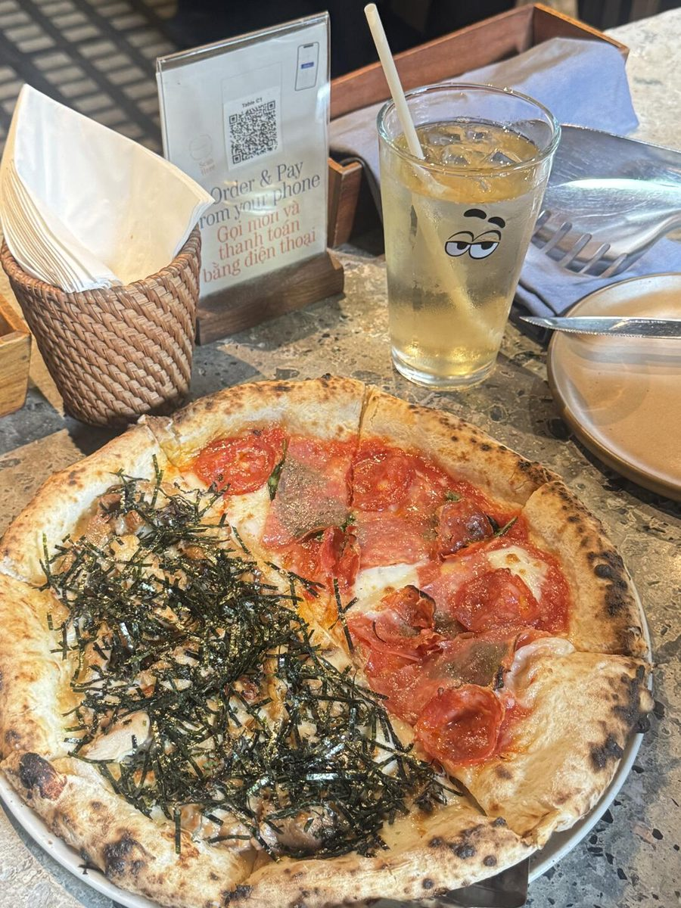

SAIGON STAYS
HO CHI MINH TRAVEL GUIDE
首頁
列表
每日行程
景點
美食
體驗購物
住宿交通
注意事項
← 返回旅行工作台
餐廳
Pizza 4P’s
Pizza 4P’s Trần Ngọc Diện
Day 3 · 晚餐

實景照片 · 圖片來源：
查看原圖 ↗
地址
Trần Ngọc Diện, Thảo Điền
價格範圍
中等價位 · 最終以菜單為準
營業 / 開放時間
建議訂位
預計停留
約 1–1.5 小時
行程怎樣接
Sala / Thảo Điền 行程後吃晚餐。
這次要注意
確定日期時間後建議提前訂位。
回到 Day 路線
查看美食總覽
Google Maps ↗